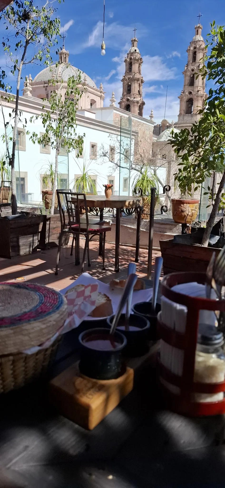
Bar restaurante · Galeana Nte 112
Cena frentea la Catedral.
Terraza en el centro de Aguascalientes. Pizzas, platos de la casa y sangría con la torre enfrente.
4.1 en Google · 2,489 opinionesLa carta
Pizza, moley la mesa con vista.
Precios de la carta que vieron sus clientes. Confirma al llamar.
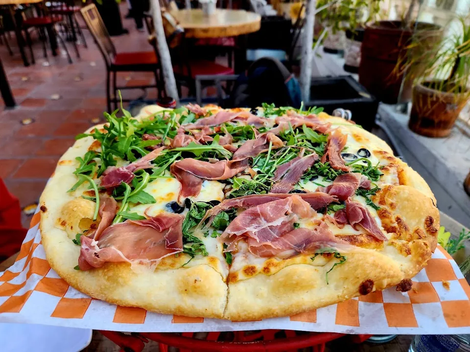
Entradas
- Tabla de tapas$157
Jamón serrano con melón, champiñones al ajillo, arúgula, salami calabrés y queso de cabra.
- Guacamole natural$174
Fresco, con totopos de maíz.
- Guacamole con chicharrón de arrachera$264
Con totopos de maíz.
- Queso fundido$174
Natural. Con chorizo, $179.
- Papas gajo$100
Con receta secreta y aderezo ranch.
- Boneless de pollo, 420 g$273
Con apio, zanahoria, ranch y papas gajo. Salsa a elegir: Lemon Pepper, Búfalo, BBQ o Mango habanero.
Tacos
- Taco Gobernador$94
Camarones, pimiento, cebolla, crema y queso en tortilla de maíz.
- Taco de arrachera$101
Arrachera, pimientos y cebolla cambray en tortilla de maíz.
Sopa, ensalada y pasta
- Sopa Azteca$104
Tortilla en juliana, aguacate, chicharrón, queso panela y caldillo de guajillo.
- Ensalada Capresse$154
Jitomate, mozzarella fresca y vinagre balsámico.
- Pasta con camarones$203
Salsa pomodoro y finas hierbas.
Pizzas
- Pizza Cazona Prosciutto$280
Pomodoro, queso, jamón serrano, arúgula y reducción de balsámico.
- Pizza Catrina$214
Masa napolitana, pomodoro, queso, jamón, salami y pepperoni.
- Pizza Margarita$203
Pomodoro, tomate natural, mozzarella fresca, albahaca y aceite de oliva.
- Pizza Messicana$258
Mozzarella, jalapeños, chorizo, cebolla, pimiento y cilantro.
Platos de la casa
- Mole Cazona$295
Pollo (o portobello relleno de espinaca) con arroz y tortillas de maíz.
- Chile Aguascalientes$284
Con nogada de guayaba, arroz y fruta local.
- Salmón Hidrocálido$315
A la parrilla, con papa confitada, salsa de guayaba y chile morita.
- Enchiladas verdes$156
Rellenas de pollo, gratinadas con queso y crema.
Hamburguesas
- De arrachera$258
Pan brioche, queso, aros de cebolla, tocino, guacamole y aderezo chipotle.
- Clásica$165
Res, queso amarillo y manchego, lechuga, jitomate y aderezo chipotle.
- Hawaiana$181
Pollo con piña, jamón, queso amarillo, lechuga y jitomate.
Cortes
- Picaña, 400 gPregunta el precio
- Arrachera, 350 gPregunta el precio
Postre y café
- Pastel casero$92
De limón o de chocolate.
- Café affogato$77
- Espresso$42
- Café americano$52
- Capuchino de sabores$73
Bebidas
- Espresso martini$121
- Tiffany$143
- Carajillo$184
- Frapuchino clásico$75
- Frapuchino de sabores$93
Amaretto, vainilla, crema irlandesa, chocolate, menta, avellana o cacao.
- Refrescos, aguas y limonadas$41
Coca-Cola, Sprite, Fresca, Sidral, mineral, Quina, limonada o naranjada.
- Botellín de agua, 400 ml$24
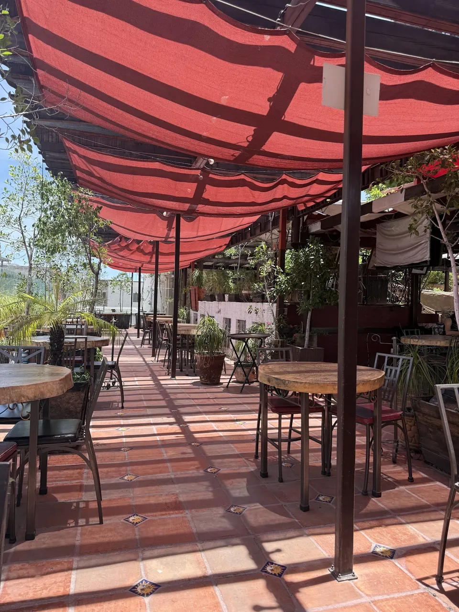
Toldos.Cantera.Cielo.
Tu mesa a su hora
Mueve el sol,arma tu mesa.
Elige la hora, agrega lo que se te antoja y llámanos con tu lista.
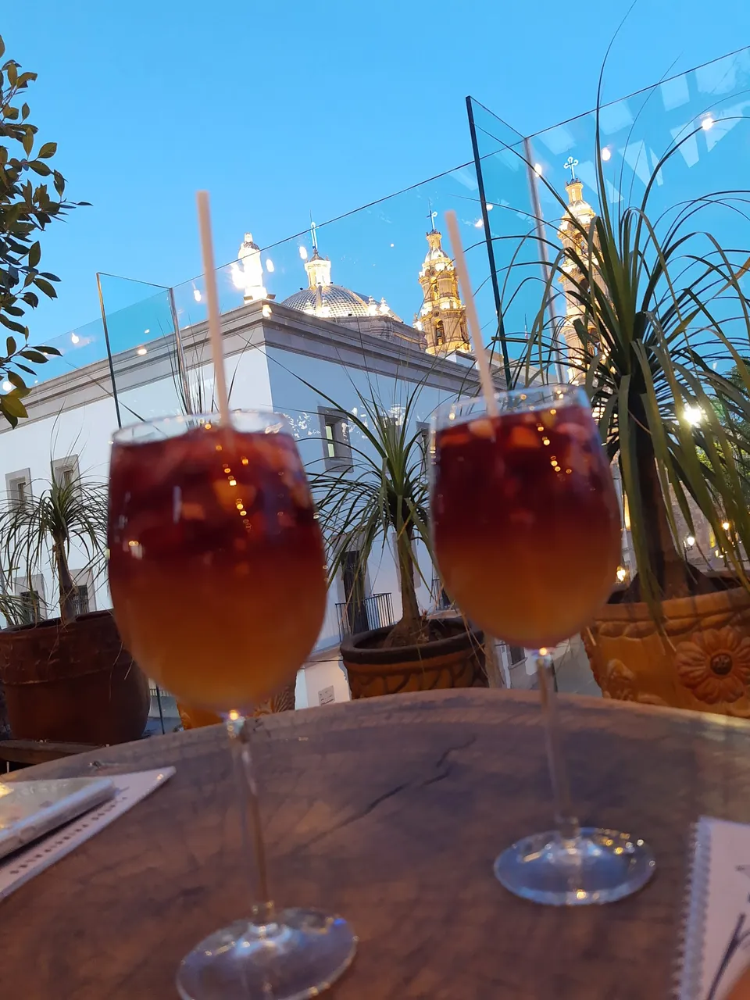
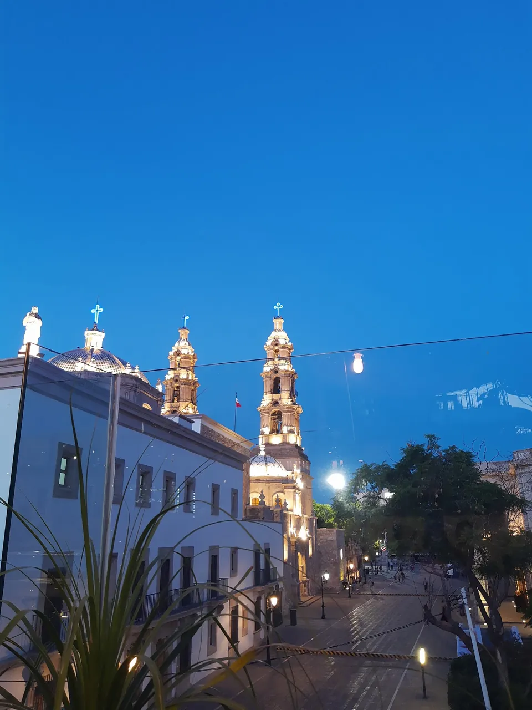
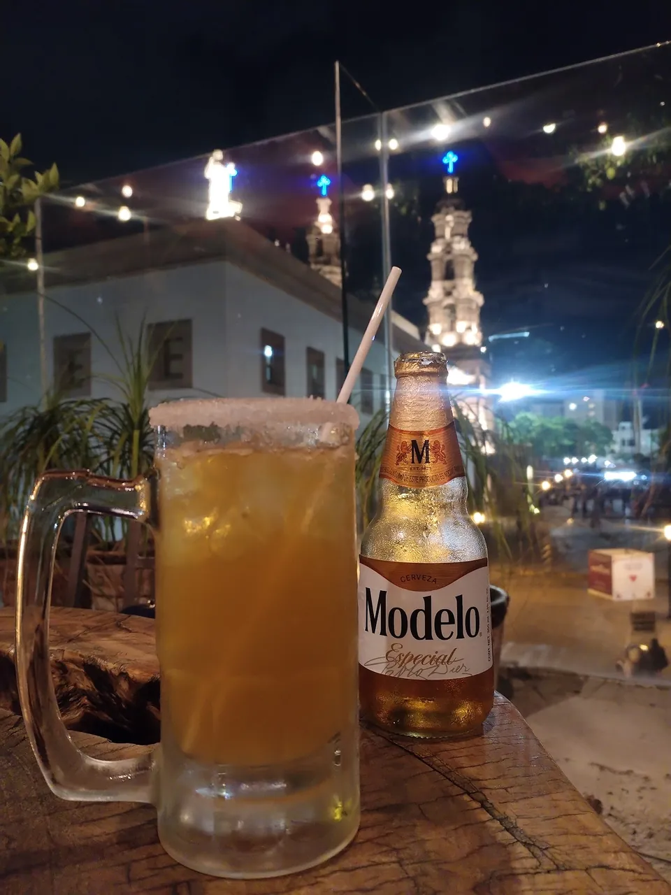
Mediodía
Hay platos sin precio en tu lista: pregúntalo al llamar.
Reseñas de Google
Lo dicendesde la mesa.
2,489 opiniones en Google
-
Es un lugar especial, su decoración y ambiente muy bien. Además la ubicación y la vista y experiencia en la terraza son 10/10. El servicio desde la entrada, nuestro mesero Felipe increíble! […]
Ivan DazaGoogle · Hace 2 meses
-
Lugar muy bonito con decoración antigua atención del personal excelente comida muy rica la vista genial recomendado 10/10
Francisco MaresGoogle · Hace 8 meses
-
Fui por la promoción de desayunos, el desayuno estuvo muy completo y muy rico, recomiendo los chilaquiles, el lugar es muy bonito y el servicio fue excelente
Joselyn SánchezGoogle · Hace 3 meses
-
Buen lugar, bien ubicado, hermosa vista. Buena atención y la comida que pedimos nos agradó mucho. […] Pero la pasamos bastante bien.
Cinthia ResendizGoogle · Hace un año
-
Love the view from the terrace seat. Good atmospher. They have a good quality of food and service. Recommend to have a dinner with friends, coworkers, and family.
Yoshi KuronumaGoogle · Hace 3 años
Reseña en inglés, tal cual
-
Super service, vu de la terrasse magnifique. Personnel courtois et menu varié et prix raisonnables. Le strudel aux pommes, délicieux !
stephane talbiGoogle · Hace 2 años
Reseña en francés, tal cual
-
Great place. Nice atmosphere. Central location. Terrace is really a plus. I was eating out there twice. Both times the food was good. And the guacamole was delicious. The waiter mixed it in front of me in a huge stone bowl.
Tamás KántorGoogle · Hace 8 años
Reseña en inglés, tal cual
-
A lovely Mexican style venue, wonderful view from the roof! Friendly atmosphere on our midday visit. Very welcoming place !
violet aprilGoogle · Hace 6 años
Reseña en inglés, tal cual
El lugar
Del zaguána la terraza.
Casona de ladrillo rojo con patios, salón y una terraza que sube.
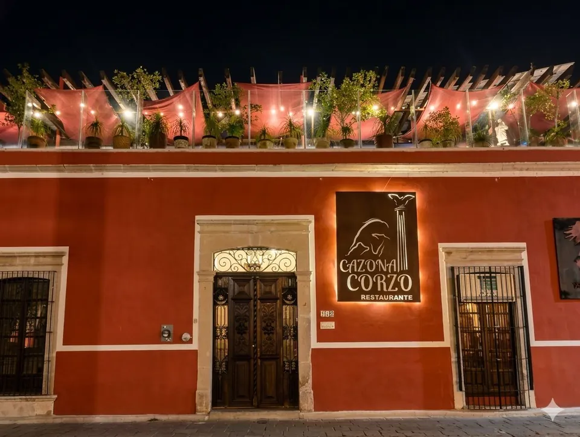
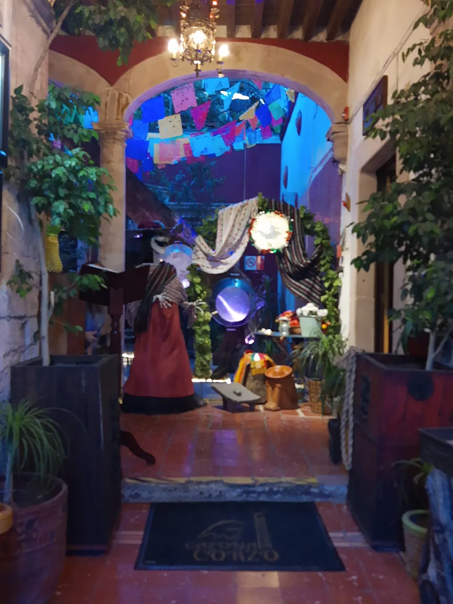
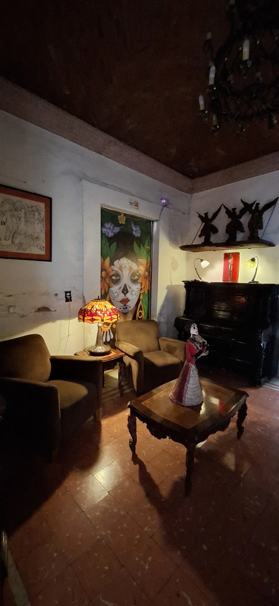
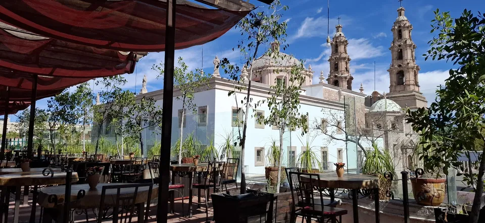
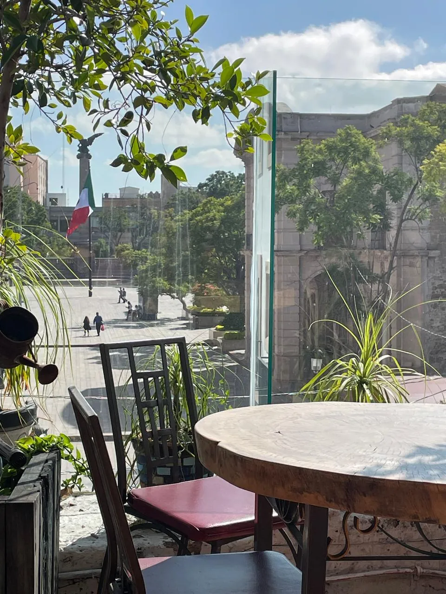
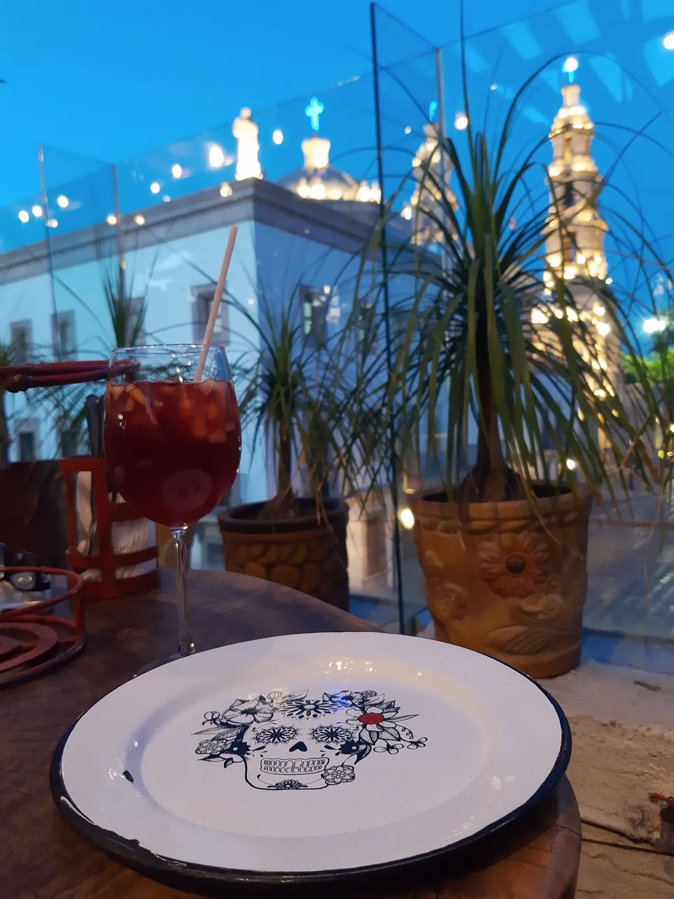
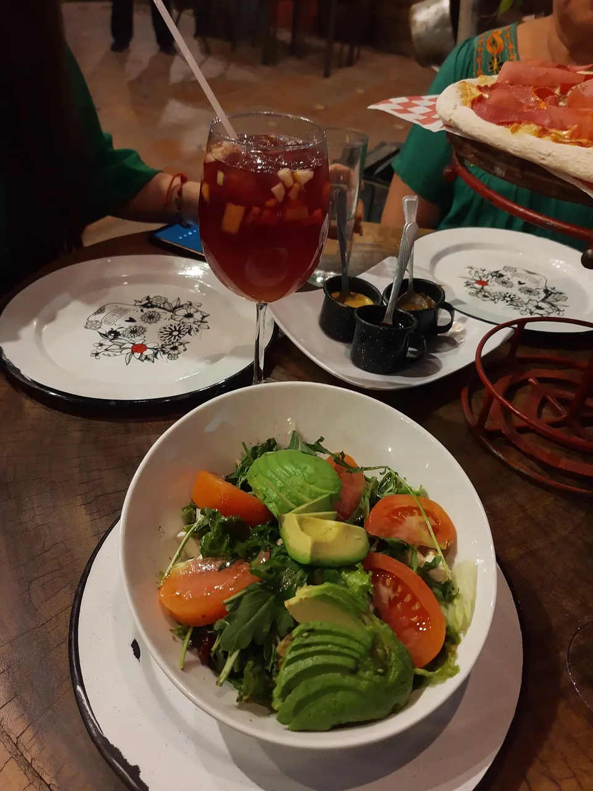
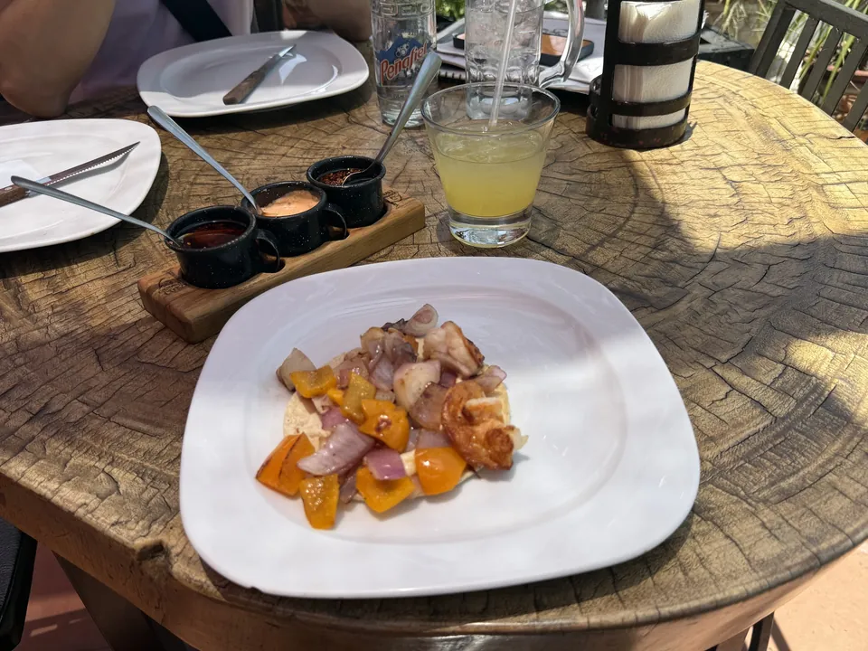
Visítanos
Galeana Norte,en pleno centro.
Calle Galeana Nte 112Col. Centro, 20000 Aguascalientes, Ags.
- LunesCerrado
- MartesCerrado
- MiércolesCerrado
- Jueves8:00 a 23:00
- Viernes8:00 a 23:00
- Sábado8:00 a 23:00
- Domingo8:00 a 19:00
Para la página final
Todo listopara completar.
Pásanoslo por el mismo chat donde te llegó esta muestra.
- WhatsApp del restaurante, si lo tienen, para sumar el botón de pedido.
- Carta vigente: precios al día y el precio de picaña y arrachera.
- Horario confirmado, sobre todo lunes a miércoles.
- Fotos propias de platillos, carta y bar.
- Instagram y otras redes del restaurante.